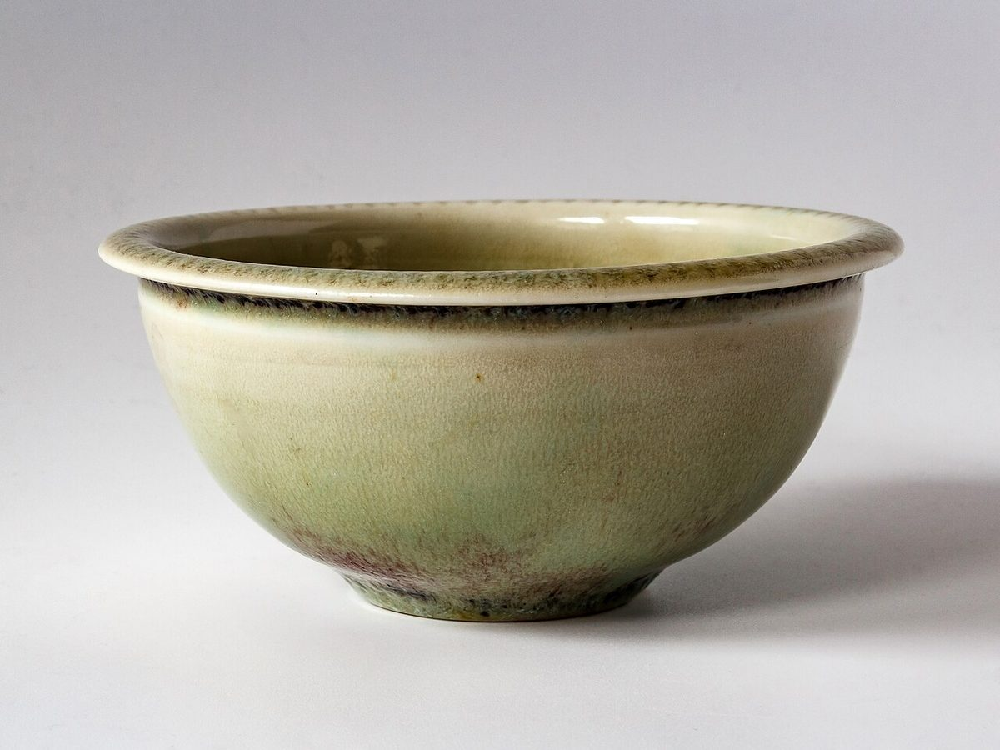

メニュー
メニュー
メニューと価格は準備中です。確定しだい、こちらに掲載します。
皮メニュー・価格
準備中
お店からいただいた情報をもとに掲載します。この枠には、実際のメニューと価格が入ります。
皮
イメージ
写真だけ先にならべます
メニューを示す写真ではありません。フリー素材のイメージです。




メニュー
メニューと価格は準備中です。確定しだい、こちらに掲載します。
準備中
お店からいただいた情報をもとに掲載します。この枠には、実際のメニューと価格が入ります。
イメージ
メニューを示す写真ではありません。フリー素材のイメージです。
